Hardware Description
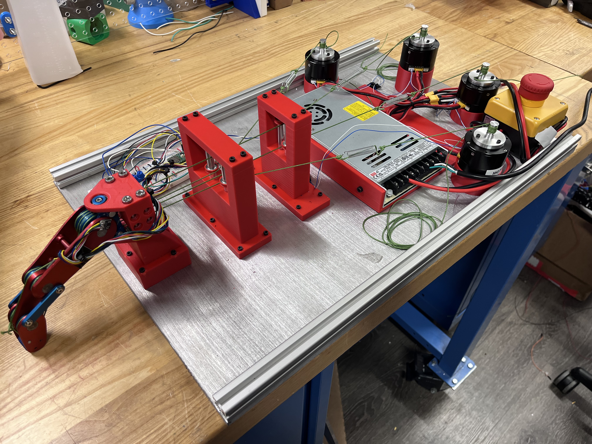
Finger mounted on custom modular testbed.
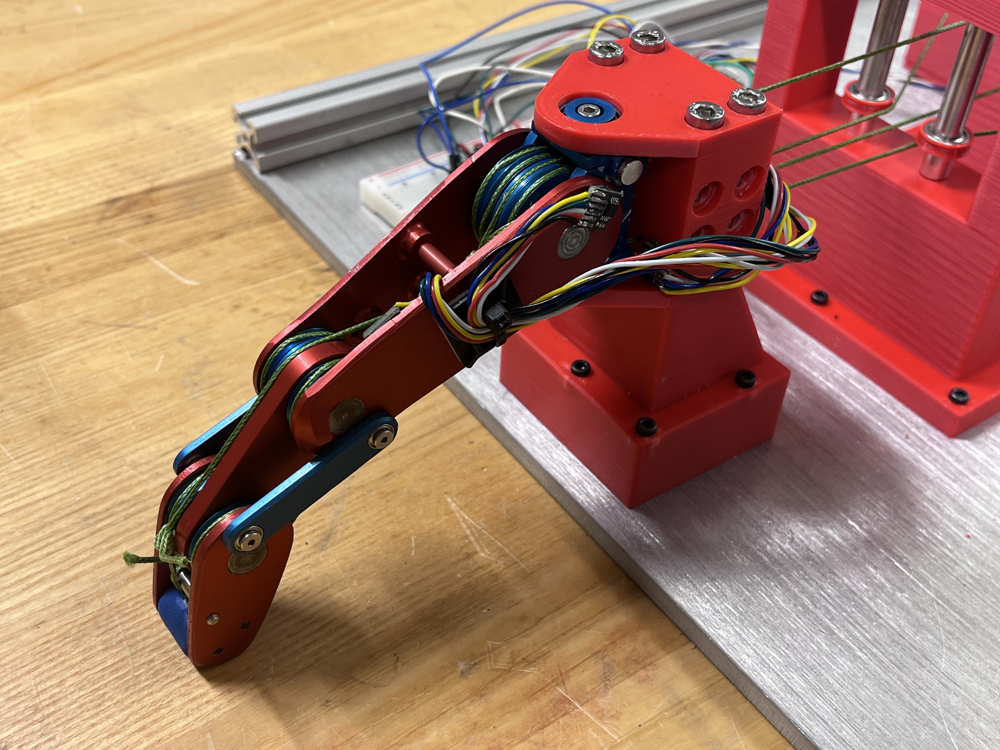
Side profile view showing resting configuration.

Design iterations used to improve force and durability.
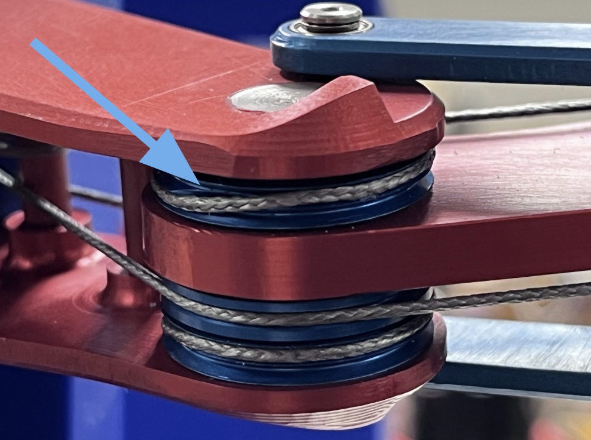
Tendon crossover point on double groove pulley.
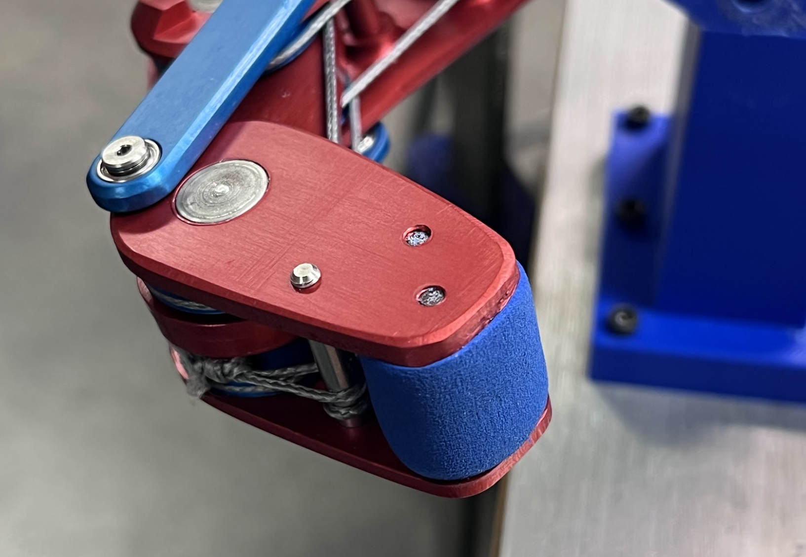
Modular fingertip with integrated compliant surface.

Parallel tensioning springs reduce slack and ease assembly.
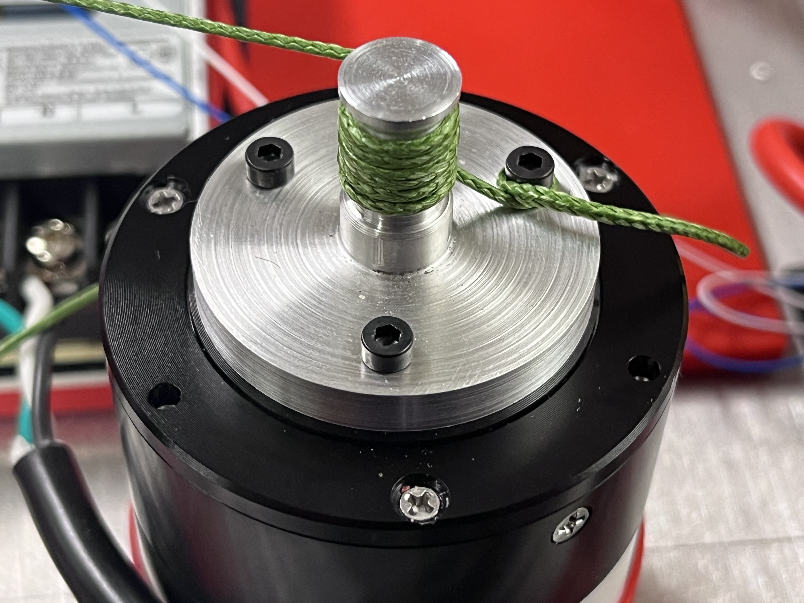
Custom motor pulleys for high torque transmission.
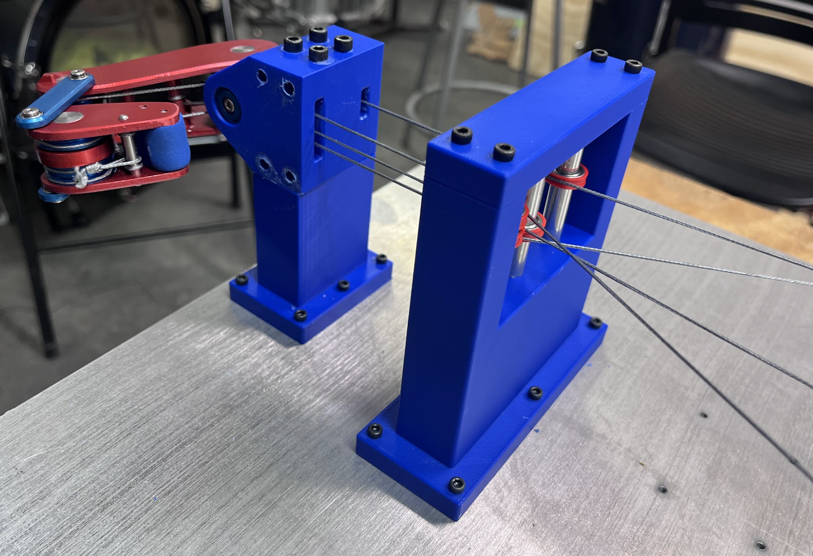
Alternative finger configuration for testing setup.
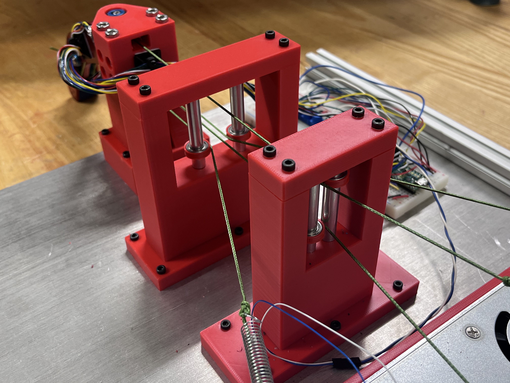
Additional pulley stands for upright configuration.
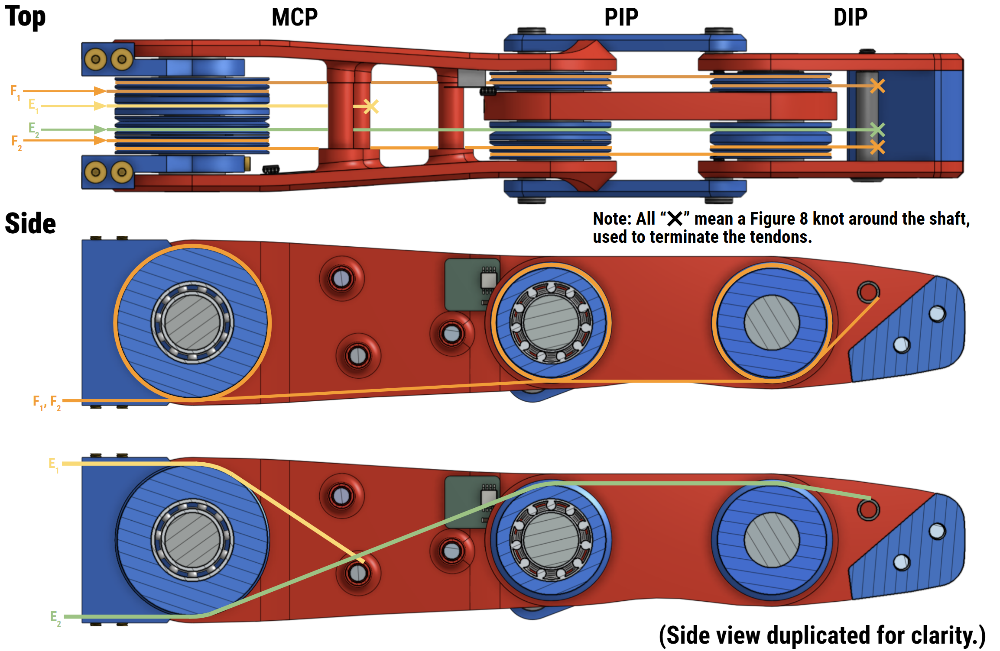
The hardware stack centers on robust tendon routing and modular construction so we can iterate quickly while maintaining high force output and repeatable performance.
- 3-DOF finger with splay and flexion/extension.
- PIP and DIP joints are mechanically coupled with an approximately linear relationship.
- N+1 actuation: two differential tendons for antagonistic splay and strong flexion, one tendon for MCP flexion and PIP/DIP extension, and one tendon for MCP extension.
- Double-groove pulleys at the joints prevent tendon slacking without tendons rubbing on each other, causing fraying and eventually breaking.
- Parallel tensioning springs reduce slack and simplify assembly.
- Figure eight knot tendon terminations on shafts for compact routing.
- Z-stack construction supports faster prototyping, assembly, and part swaps.
- Custom modular testbed includes finger and motor mounts, pulley stands, and 80/20 reinforcements to prevent deflection.
- High strength finger mount with bolt reinforcement.
- Custom off-axis joint encoders provide absolute position sensing.
- Most components were manufactured in-house: pulleys, shafts, finger frames, and mounts.
- Modular fingertip includes compliant contact surface and future tactile sensor mounting support.
Motor Specs
| Spec | Value |
|---|---|
| Reduction | 10:1 |
| Continuous Torque (Nm) | 1.3 |
| Stall Torque (Nm) | 4.1 |
| Max Speed (RPM) | 370 |
| Rotor Inertia (gcm²) | 97.35 |
| Back-drive Torque (Nm) | 0.06 |
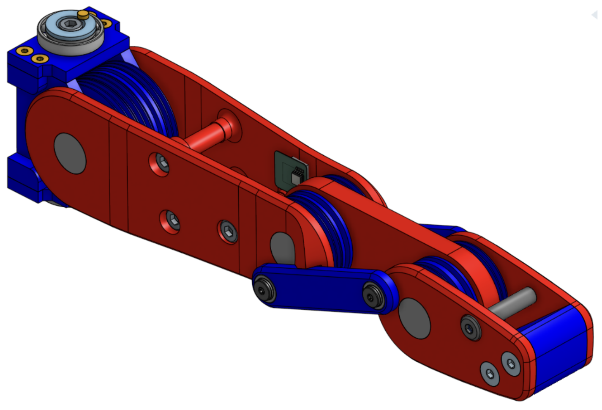
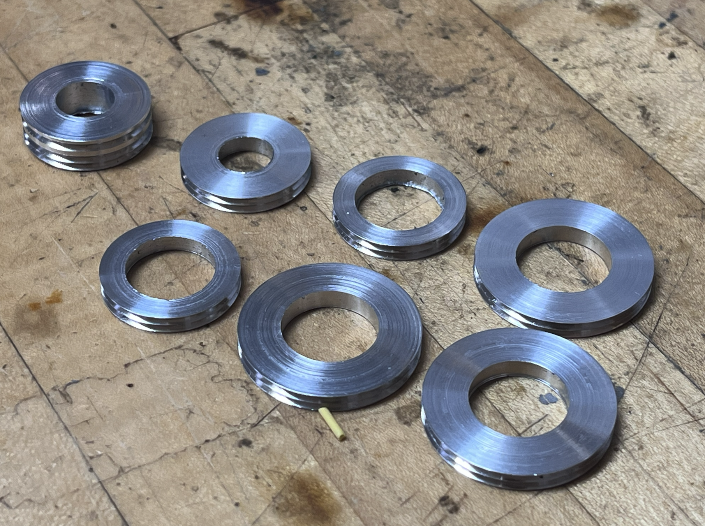
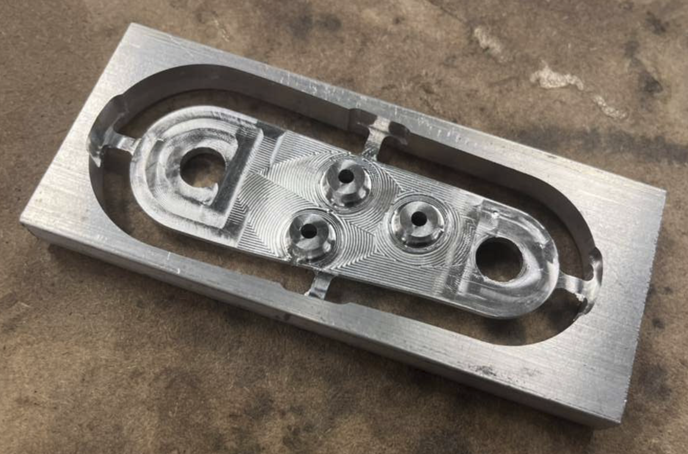
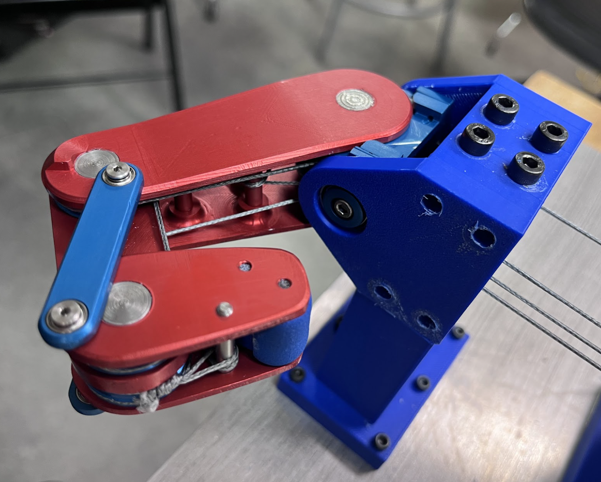
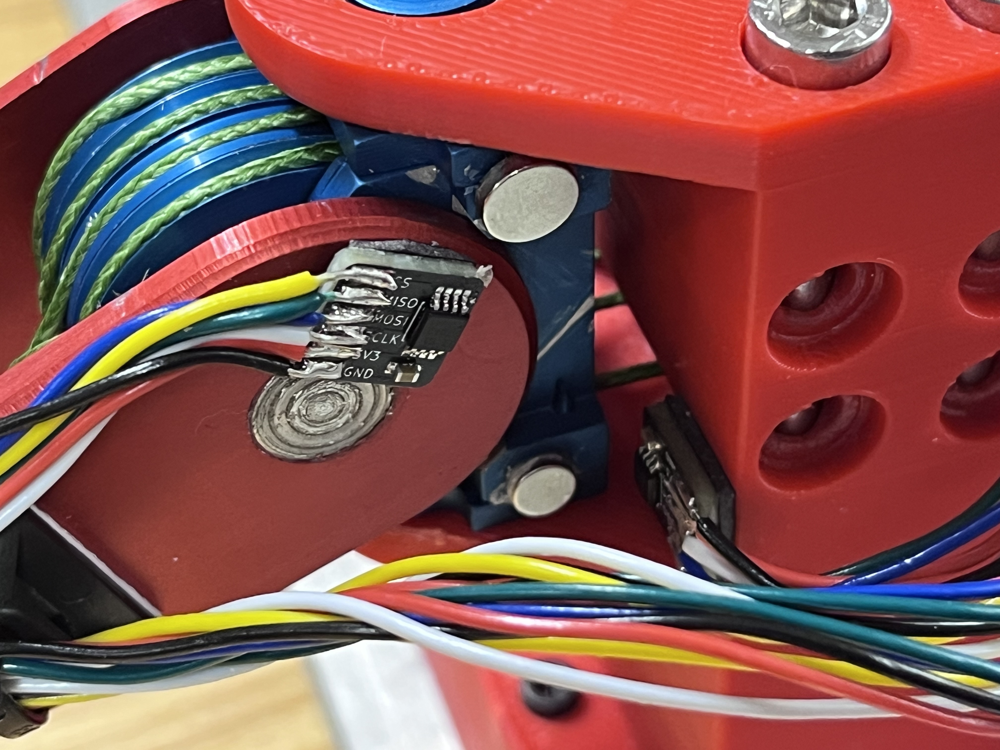
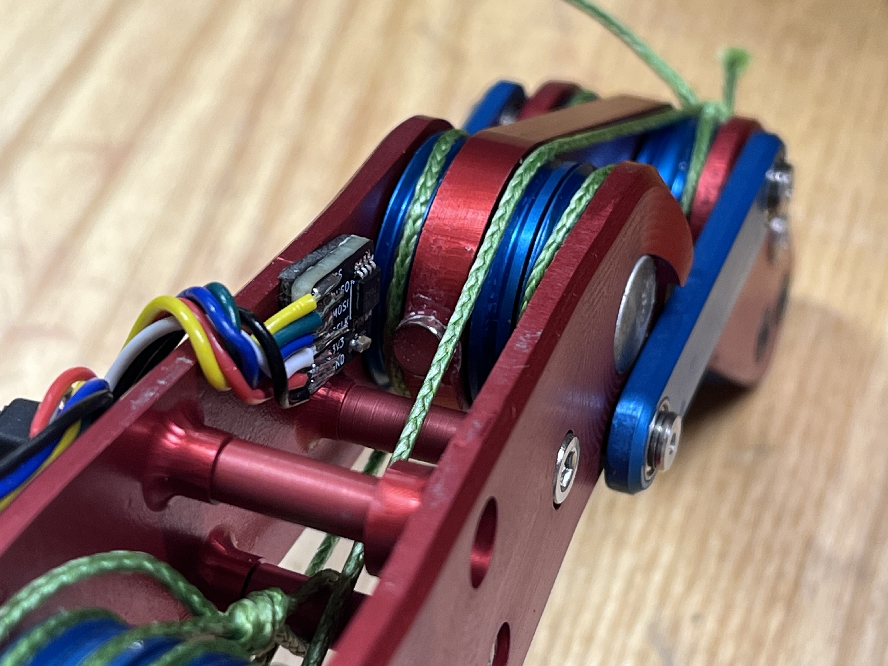
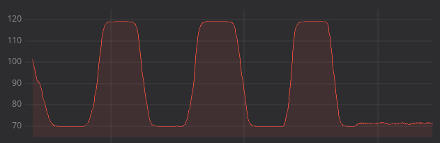
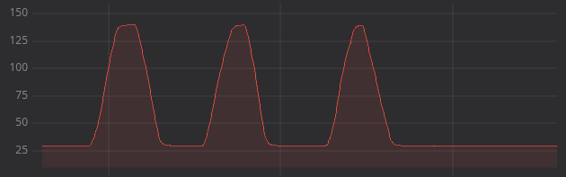